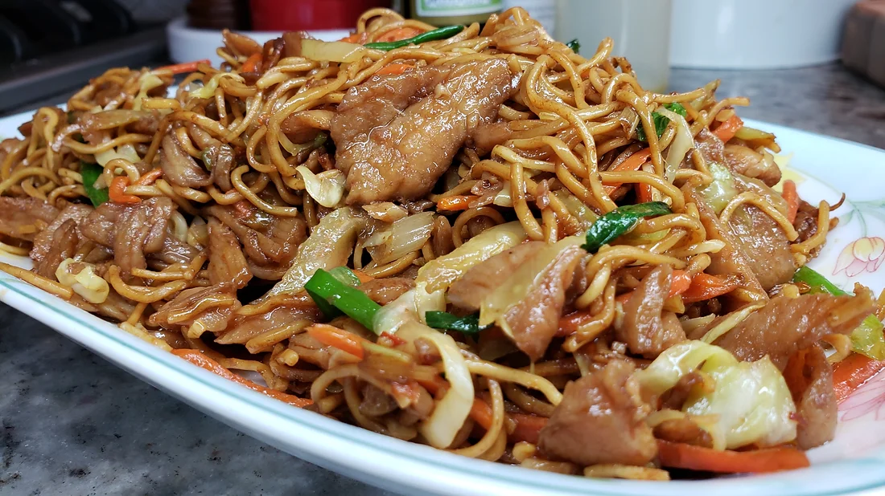

Home
Chicken Chow Mein

Description
This is a simple homemade Chinese take-out style chow mein recipe. This is great for a dinner recipe idea.
The sauce ingredient ratios can be adjusted to your preference. The marinated chicken is optional as this can also be a vegetable chow mein recipe.
Ingredients
- 12 oz package (340 g) chow mein noodles
- 1 lb (454 g) chicken breast (thinly sliced)
- 2 tsp baking soda
- 1/2 tsp white pepper
- 1 Tbsp (15 ml) soy sauce
- 1 medium carrot (julienned)
- 2 celery sticks (thinly sliced)
- 1 1/2 cups (150 g) cabbage (thinly sliced)
- 5 scallions (separate the whites from the green tops)
- 3 cloves garlic (minced)
- 2 tsp fresh ginger (minced)
Sauce
- 2 Tbsp (30 g) oyster sauce
- 2 Tbsp (30 ml) dark soy sauce
- 1 Tbsp Sambal (ground chile sauce)
- 1 1/2 tsp sugar
- 1 1/2 tsp rice vinegar
- 1 1/2 tsp sesame oil
Steps
- To the thinly sliced chicken, add white pepper, soy sauce and baking soda, then combine and marinate for at least 15 minutes.
- Prep the chow mein noodles, using the package instructions, shock them in cold water and drain well.
- Spread the chow mein noodles on a baking sheet to dry until ready to use.
- In a bowl, combine oyster sauce, dark soy sauce, Sambal, sugar, rice vinegar and sesame oil, then set aside until ready to use.
- Preheat a large pan or wok until smoke point then add 1/4 cup of cooking oil.
- Quickly stir fry chicken until cooked, then remove and set aside.
- Now add prepped carrot, celery, cabbage and onion, then quickly sauté for 30 seconds. Remove from pan and set aside.
- Add 2 more tablespoons of cooking oil along with the chopped scallion whites and ginger. Sauté quickly.
- Now add prepped noodles and chicken, then stir fry and combine quickly.
- Next add the sauce and coat the noodles well.
- Add the sautéed veggies, chopped green tops of the scallion, mix and turn off the heat. Serve and enjoy!